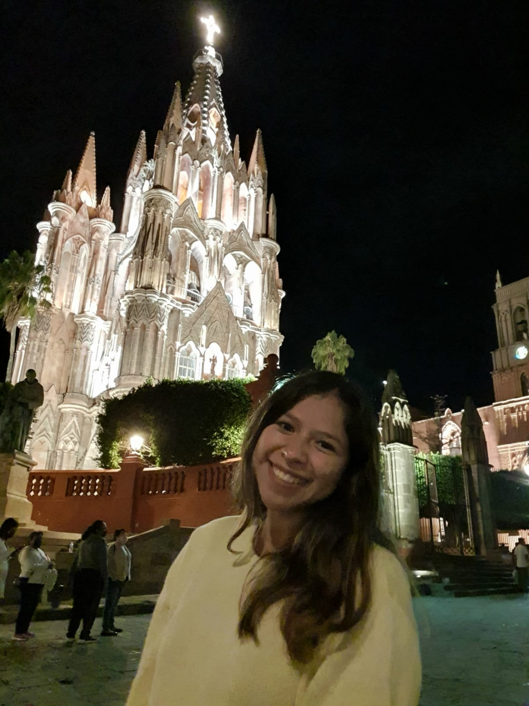
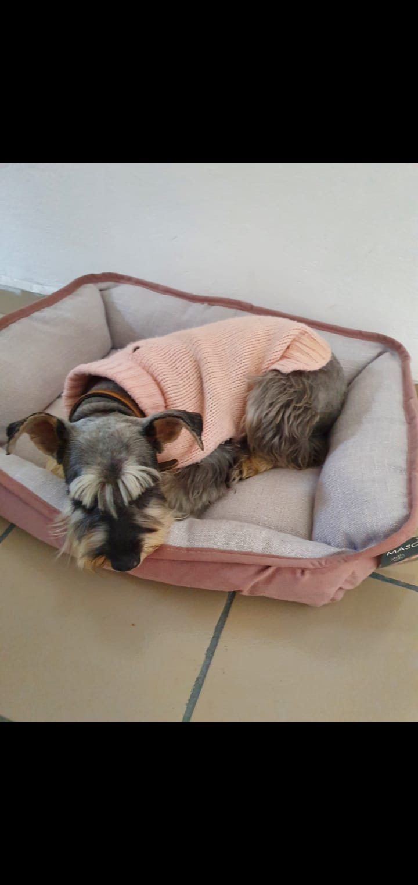
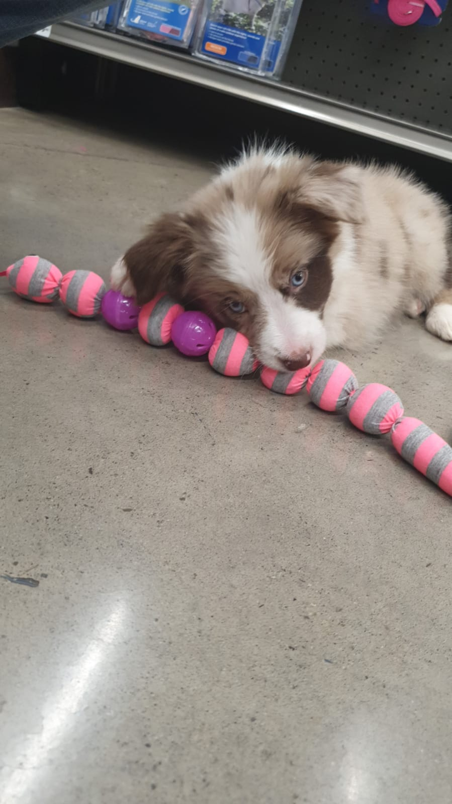
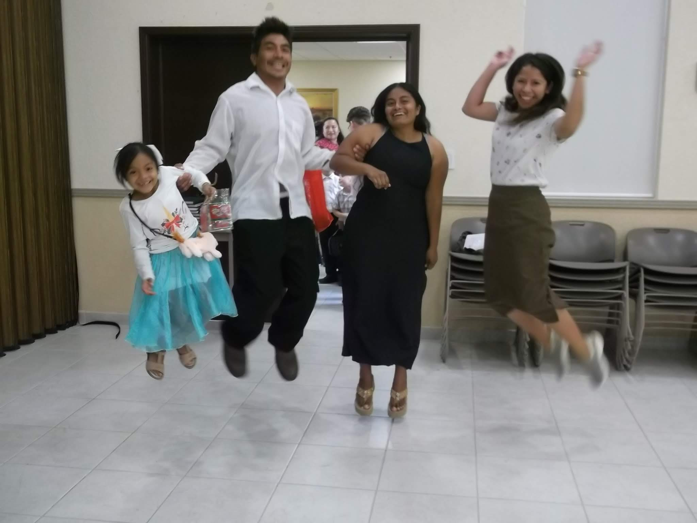

I'm studying Applied Technology and besides programming, I love listening to music and traveling through the country with my friends or alone, also I enjoy playing with my two beautiful pets Valentina and Laia. Laia is a beautiful border collie, she is 4 months. Vale is 5 years and is a schnauzer.
I'm not married yet but I'm dating an amazing guy :) Currently, I'm not working but, at the beginning of the year, I worked for 2 different companies as a software developer and I had the chance to apply all the knowledge I got in my first semester
What I like the most about studying at BYU is the opportunity to study remotely and to have the flexibility to adapt my career plan while working at the same time. I consider that learning about web design is so important to understand the very basis of a software development approach. Taking that into account, I'm taking this course to acquire the necessary tools to have a good performance in the creation of amazing user experiences through web design development. Finally, in my life, I think that I will create a perspective mixed with the design and the impact that this is going to have on the final user in everything that I work on in my life.
16 years as a member of the church. My favorite quote is "Venga lo que venga, disfrútalo" from elder Joseph B. Wirthlin. And my favorite scripture is "2 Nephi 4: 15-35 I love these paragraphs because help me to feel love and strength in my life. Also, I had the opportunity to serve as Missionary in Cancún México.
   